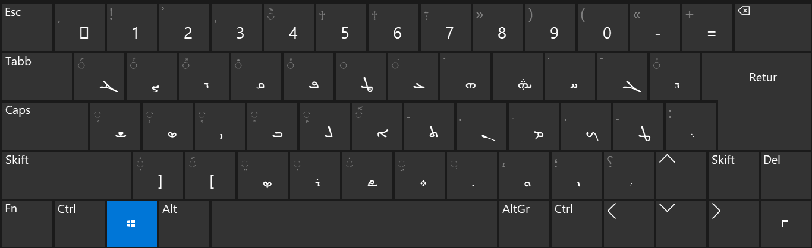

This is a page about Estrangela Syriac script, there are three types of Syriac writing, here is a list of them:
Probably not. I've left the Hebrew letter along with the roman one down below to make it easier to learn for people who already know at least the Hebrew alphabet. I imagine if you're trying to learn Syriac you're probably a Jew or a Christian who already speaks a little Hebrew. There might be some Arabic speakers who are reading this, there is a version with arabic equivilant characters over at the "semitic transliteration table" page. For those of you who don't know any semitic alphabet, it might be a bit tricky to get the hang of things at first.
So
| Name | ROM | IPA | Final | Medial | Initial | Isolated |
|---|---|---|---|---|---|---|
| A א | [ʔ, aː, eː] | ـܐ | ܐ | |||
| B/V ב | [b, β] | ـܒ | ـܒـ | ܒـ | ܒ | |
| G ג | [ɡ, ɣ] | ـܓ | ـܓـ | ܓـ | ܓ | |
| D ד | [d, ð] | ـܕ | ܕ | |||
| H ה | [ɦ] | ـܗ | ܗ | |||
| V/O/U/W ו | [w, oː, uː] | ـܘ | ܘ | |||
| Z ז | [z] | ـܙ | ܙ | |||
| Ch ח | [ʜ, χ] | ـܚ | ـܚـ | ܚـ | ܚ | |
| T ט | [tˤ] | ـܛ | ـܛـ | ܛـ | ܛ | |
| I/Y/E י | [j, iː, eː] | ـܝ | ـܝـ | ܝـ | ܝ | |
| K/Ch כ | [k, χ] | ـܟ | ـܟـ | ܟـ | ܟ | |
| L ל | [l] | ـܠ | ـܠـ | ܠـ | ܠ | |
| M מ | [m] | ـܡ | ـܡـ | ܡـ | ܡ | |
| N נ | [n] | ـܢ | ـܢـ | ܢـ | ܢ | |
| S ס | [s] | ـܣ | ـܣـ | ܣـ | ܣ | |
| O? ע | [ʢ, ʁ] | ـܥ | ـܥـ | ܥـ | ܥ | |
| Ph/p/f פ | [p, ɸ] | ـܦ | ـܦـ | ܦـ | ܦ | |
| Tz צ | [sˤ] | ـܨ | ܨ | |||
| Q ק | [qˤ] | ـܩ | ـܩـ | ܩـ | ܩ | |
| R ר | [r] | ـܪ | ܪ | |||
| Sh ש | [ʃ] | ـܫ | ـܫـ | ܫـ | ܫ | |
| T/th ת | [t, θ] | ـܬ | ܬ |
Note: Western vowels can be written above, below and a little bit everywhere.
| Western | Eastern | IPA | Example | Example IPA |
|---|---|---|---|---|
| ܰ | ܲ | [a] | ܒܲ ܒܰ | [ba] |
| ܶ | ܸ | [ɛ, ɪ, e] | ܒ̤ ܒܶ | [be] |
| ܺ | ݈ | [i] | ܒ݈ ܒܺ | [bi] |
| ܳ | ̈ | [o] | ܒ̈ ܒܳ | [bo] |
| ܽ | ݇ | [u] | ܒ݇ ܒܽ | [bu] |
In case you need to learn the keyboard layout, here is a good picture. 
{kind=link}